-
So you want to convert your car over to manual steering like a real man? Well you've come to the right place. This guide covers everything in the power steering removal, pump, rack, lines, everything. So let's get started.
Parts you will NEED:
A can of grease. I used red High Temp grease
New Rack boots, if they are bad. (Recommended anyways)
Possibly new Tie Rod ends
Blue Loc-tite
Tools you will NEED:
Basic tools you should have anyways.
(Metric wrenches and sockets from 8mm to 21mm)
Flathead Screwdrivers or punch set
A bench with a vise (You MIGHT be able to with out it, but it will be a LOT harder)
Hammers, (A rubber or dead blow would also be good)
Assortment of pliers, cutters, needle nose
Hacksaw or cutting wheel
A large Pipe wrench or Channel Locks, 3-4" jaws
Drain Pan
Ruler, Whiteout, etc.
Lots of old Rags
Recommended:
Z31 FSM for your year model
A Chisel set
Vice Grips
Degreaser
Tie rod removal tool, Available for rent at Autozone
Common sense
Power Steering Rack: Removal
#1 First, you need to get your car up on jack stands and take the front wheels off. If this makes you uncomfortable, then don't do this mod, lol.
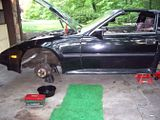

#2 Go ahead and crack a couple of your lines loose to get the fluid draining. Take the cap off the P/S reservoir to speed things up.
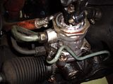
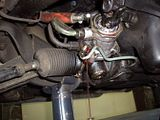
(Choose your path, a or b…but choose wisely, lol)

#3a. You can remove the outer tie rod ends from the hub assemblies using either a hammer, turning the nut upside down and screwing it back on a bit, and some extreme caution, or a tie rod removal tool you can rent or buy at any Auto parts place, which is REALLY HIGHLY RECOMMENDED.
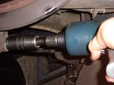
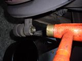
#3b. Push the rack boots back a little bit to reveal the flat spots that a 13mm or 14mm wrench will fit on. First, measure the length of threads from the nut up, or count them. You will need to be able to drive your car to an alignment shop! Loosen the locknut on the outer first, (21mm I think, or channel locks), then unscrew the inner tie rod all the way out. It will take a while, and the Jeopardy song might start playing in your head. Also make sure your steering wheel isn't locked.
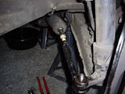
This one pissed me off, lol.

#4. Now that both outer tie rods are not holding us back, go ahead and take the 10mm or 12mm bolt out of steering shaft so you can pull it away from the spindle on the rack. It is a good idea to mark this with something first, but I am getting an alignment after this, so I didn't care.
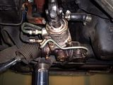
#5 Unscrew any lines still attaching the rack to the car, 2 of them I think.
#6 Take the 4 14mm bolts holding the brackets for the rack, noting how the left bracket is positioned. It has a hump in it that needs to point forward. Make sure it goes back that way.
#7 Now you are ready to yank that sucker out. Pull it out on the driver's side, not even sure if it's possible to do it the other way. You will have to shift and manuever it, at some point make it upside down. You will likely get fluid all over, have fun!

#8 We can see our victim clearly now, clean it up with degreaser and rags, the cleaner it is now, the easier everything on the bench will be. You may also point it at your drain pan and move the rack, getting as much fluid out as you can.


Power steering rack: Disassembly
#8 First go ahead and remove any other lines on the rack and both boots.


#9 Take out the Torx or 1/2" box screw and the outer ring. Remove the spring and half-pipe looking piece.

#9.5 Go ahead and remove the inner tie rod ends BEFORE taking the worm gear out. It's much easier this way.
This is for reference of the sizes of the nuts and whatnot.

#10 Take the large outer nut loose from the worm gear housing, and then using a flathead/punch and hammer, spin the piece out.
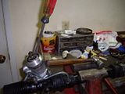
Lol, it still had fluid in it, this is why I recommended getting it all out earlier, heh.

#11 Now we need to get those Inner tie rod ends off. I used an old paint stick between a pair of vise grips so as not to damage the steering rod. Use your own methods, mine worked great for me. On second thought, just remove the inner tie rod ends before taking the worm gear out, DOH!
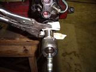
#12 Sorry for the lack of pictures here, I kind of got carried away and didn't take a picture, lol. Using your nifty pipe wrench, remove the center tube from the rack. You can use your screwdriver/hammer combo to loosen the little ring piece, but mine came loose without doing that. When clamping the rack in the vice, make sure not to squeeze any delicate parts too hard!

This pic might help..
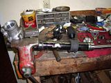
#13 Using whatever method you are comfortable with, get this ring off the steering rod. I used a hacksaw, cut it at a 45 degree angle in two places, then use a chisel and hammer to separate it until it broke into multiple pieces. Just don't beat the piss out of your rod! (LOLOL)
Here is pic I drew up that may help:
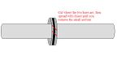

#14 Alright, so you took that tube off, that pesky high pressure seal is laying defeated upon your workbench, you're only halfway finished…Now you need to take this little spacer whatever thing out, and pull the rubber seal out the end of it. Why, you ask? Well, since we are about to fill this rack with heavy grease, we need it to be able to travel and lubricate all parts of the rack. It made sense to me.

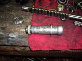
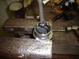
#15 Clean it up! Lube it up! Now it's time to put this mess back together. Clean everything up as much as you can. Polish your rod, (last one I swear, lol), then liberally coat everything in grease, especially the areas where there are teeth.
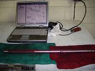

#16 Reassemble in reverse order…nope, this isn't a Haynes manual, I'm here with you all the way, lol. Put that insert piece on the rod, and put it back into the worm gear housing…hell, look at the pictures…


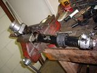
The parts we left out. They don't get to play any more reindeer games.
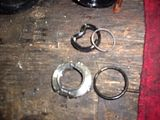
#17 Install the worm gear piece. I put more grease in before I did, just to make sure.


#18 Go ahead and screwdriver/hammer it back together, not TOO tight though, check the tension and make sure it's in, but not binding tight.
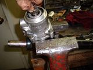
#19 When I realized the only thing sealing this section from the dirt, crap, and dust of outside, I put more grease in, and got a another boot off of my old parts car. This boot is very important, it needs to be a good one.
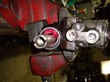
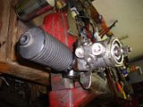
#20 Now it's time to make caps for all those old power steering line we don't need anymore. I used a paid of good dikes, squeezed the line about an inch above the fitting, and it breaks right off when you bend it. then I folded it upon itself and put in the vise. It's not gotta leak…heh.
" />

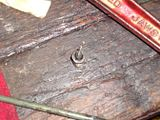
#21 Shoot some more grease into here, I did at least. Put the halfpipe piece back in, the spring, and screw the torx piece in and the outer ring. Now, this thing basically adjusts how easily the rack can move your steering wheel, and how hard it is the move the rack in general. Having it loose or tight can both render good and bad things. Loose will let you really feel where the car wants to go, but can also make it easy for the wheel to get jerked out of your hand. Tight will just make it harder to turn in general, but make bumps and things less likely to avert the steering wheel. Find your happy medium. I adjusted mine until it became harder to turn by hand, but not impossible.

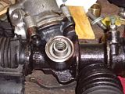


#22 Time to install those inner tie rod ends. The FSM recommends loc-tite on the threads for these, and so do I! When it has to do with whether or not I can steer my car, using loc-tite doesn't seem like a bad idea. After screwing them on, mash the little washer pieces flat to also keep them from backing out.

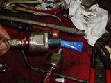

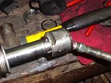
#23 Reinstall the boots. Clamp them, whatever. That tube going from one side to the other, well, it's IMPORTANT! If yours broke off like mine did, make something work. Otherwise you will be getting dirt and crud in your rack, and now that it is full of grease, it's more important that it stay clean inside.
obucket.com/albums/h131/starion76/Manual%20Steering/th_IMGP1325.jpg" alt="" />
Mine looked like this…yeah, not gonna fly.
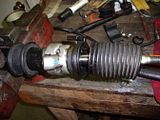
Power Steering Pump: Removal (And good riddance!)
Who likes parasitic loss?!? Not I.
#24 This really isn't all that hard honestly. You will need some 12mm and 14mm wrenches and sockets, and I think either a 19 or 21 for the high pressure line fitting. TAKE IT LOOSE FIRST! It's a lot easier that way. Also keep your drain pan handy, somehow there will still be just enough fluid in things to piss you off. Loosen the tensioner bolt holder just below the front of the pump, then loosen the tensioner itself until you can remove the belt. Take loose any other lines going to it, yank the pump out, chunk it on the ground and declare yourself the victor in the war against power steering. Take the power steering bracket loose. 3 bolts I believe.


Aahh, Much better!

#25 Remove the four 10mm bolts holding the reservoir in place. Chunk on ground next to pump.
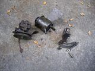
#26 Once again, a lack of pictures, but this is pretty simple. Those pesky lines are held in place by two 10mm bolts just in front of the engine cross member. Easy pie. Take out bolts, yank out lines, cut off ends to make the last two plugs for your rack. You may have to use a hacksaw or tubing cutter for these, they are quite strong.
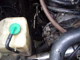
Manual Steering Rack: Installation!
Hmm, something missing here!

There it is! Where were you hiding you naughty rack!
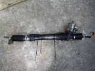
#27 I ziptied that all important line running from both boots, just because I think you should. Maneuver your awesome rack into place, (that means you, ladies), and set it in the mount.
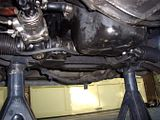
#28 Now, I found this out the hard way, but go ahead and re-attach the steering shaft to the rack BEFORE bolting any of the steering rack brackets down. It is VERY IMPORTANT that you push the rod far enough up onto the spline so your bolt will fit where it needs to. Losing your steering is not a happy thought. If you have problems getting it back on, a fat screwdriver or chisel will work to stretch it open and make it go on easier.

#29 Put the rubber mounts in their proper places, the driver's side mount fits into that hump I mentioned earlier. Make sure that all fits properly because it controls how the rack is oriented. Tighten the 4 14mm bolts and double check everything.
#30 Screw the tie rod ends back on or put your outer tie rods back in. Either way, you're done. Pat yourself on the back, drink some beer, and get an alignment the next day, lol.
I hope this guide is helpful to you guys, it took a while to make. Good luck on your battle against parasitic loss, and your new workout plan, driving in parking lots!
LaterZ.1986 300ZX, Got the 85 Turbo Engine, Satan's Exhaust manifold, GT35R, Tial 44mm WG, Tial 50mm BOV, Nistune, 460cc Injectors, Treadstone Intercooler, NGK Wideband, Greddy Profec B Spec II EBC, 16 PSI and rising, heehee.
1993 300ZX Convertible, Pearl White, Bone Stock summer car.
1985 300ZX Turbo Wrecked (Parts car) : ( In her old days
1984 Mitsubishi Starion \
1987 Dodge Conquest - None of them run, LOL
1988 Mitsubishi Starion / -
Sticky.. need bigger pics though. -
You don't think they are big enough even when you click them? I still have the originals if people think they should be bigger.1986 300ZX, Got the 85 Turbo Engine, Satan's Exhaust manifold, GT35R, Tial 44mm WG, Tial 50mm BOV, Nistune, 460cc Injectors, Treadstone Intercooler, NGK Wideband, Greddy Profec B Spec II EBC, 16 PSI and rising, heehee.
1993 300ZX Convertible, Pearl White, Bone Stock summer car.
1985 300ZX Turbo Wrecked (Parts car) : ( In her old days
1984 Mitsubishi Starion \
1987 Dodge Conquest - None of them run, LOL
1988 Mitsubishi Starion / -
Use the IMG feature (last line under the pics in photobucket) to make the pics larger and permanent. This does away with the mouse clicky.
1986 300ZX Turbo…sold
1990 Skyline GT-R…new money pit
2014 Juke Nismo RS 6-speed…daily -
another idea for sealing the tube fittings going into the rack (what i did).
find an old unused nut that fits the fitting and screw the fitting into the nut, find a small piece of steel tubing that is big enough to rest the nut on with the fitting comfortably inside without damaging the threads and set this entire thing into your vice (the length of the small tube depends on the size of your vice) and clamp the vice to the NUT (this is very important that the nit is slightly bigger than the tube so the vice does not crush the tube and damage the threads on the fitting) with the tube resting on the slide of the vice. the importance of this tube it to prevent the nut and fitting from slipping out of the vice during the next step.
clip the line about 1/2-3/4" above the fitting and crush the end, get a propane torch (or whatever heat source you have handy) and heat the line till its a little more malleable and with a ball-peen hammer slightly bend and flatten the tube on to the top of the fitting, if you have excess tubing hanging over the edge of the fitting cut it off with the dikes.
i did this and tested them with the small tube welded to the nut and and filled it with water and pressurized it, it doesnt leak a drop!
this method may take longer, but its a little extra reassurance on the "no leak" front.
very nice write-up! :super -
Everyone is a critic...........click on the picture, make it bigger. He already dedicated more time to this than you would have to help everyone who is interested in doing this.
2slick, that is a good idea - I havent even put mine in yet and will give this a shot instead of the goofy fitting setup I came up with.
Zed, great write up, hopefully it will get stickied. Thank You for dedicating your time to doing this the right way! :-DWho are you to tell me my uninformed opinion is wrong?!?!?
Expert: He who has made all the mistakes there is to make in a given field. -
2slick, that's a good idea, definitely a cleaner look, and a sure way to seal them for good.
TODD, your welcome, and thanks for sticking up for me, heh. It took a while to make, but I think it was worth it.
UPDATE: Alright so I got my alignment today, and have driven the car about 40 miles. I must say, it's pretty awesome to be able to feel everything your car is doing, and it really helps with preciseness. It's not the easiest thing in the world to turn, but I am running 84 wheels with 2" spacers, so that might have a negative effect on things.
Overall, I'm glad I did it. It's not all that hard to do, it really helps clean up the engine bay, and now I only have ONE drive belt, which is just awesome. You will need to drive with two hands now, especially when driving fast, which you should anyway. This mod promotes SAFETY! Heheh.
LaterZ.1986 300ZX, Got the 85 Turbo Engine, Satan's Exhaust manifold, GT35R, Tial 44mm WG, Tial 50mm BOV, Nistune, 460cc Injectors, Treadstone Intercooler, NGK Wideband, Greddy Profec B Spec II EBC, 16 PSI and rising, heehee.
1993 300ZX Convertible, Pearl White, Bone Stock summer car.
1985 300ZX Turbo Wrecked (Parts car) : ( In her old days
1984 Mitsubishi Starion \
1987 Dodge Conquest - None of them run, LOL
1988 Mitsubishi Starion / -
This brings a smile to my face. Can't wait to get this done and installed in one of my cars!!! Weight savings FTMFW!!!
1985 Nissan 300ZX 2+2- My first Z, back in the family
1987 Nissan 300ZX Turbo RIP 4/87 - 4/28/2011
Under Construction: 1986 Nissan 300ZX NA2T Slicktop
Originally posted by Tempestas -
Is it really still that difficult with your setup?Zed31 wrote: 2Overall, I'm glad I did it. It's not all that hard to do, it really helps clean up the engine bay, and now I only have ONE drive belt, which is just awesome. You will need to drive with two hands now, especially when driving fast, which you should anyway. This mod promotes SAFETY! Heheh.
I didn't even think it was that bad with everything still in there, and just the pump removed on my 85'. It was obviously more work than with PS, but I could still get to full lock when parking with just one arm. And once you're rolling there is no difference at all, you shouldn't have to use both hands any more than you should in a car with PS.
That makes this mod sound way unappealing to some people. The car is LESS twitchy, and should be way smoother. In my experience anyways.
your tires inflated properly?
I'm not trying to sound like im criticizing, im just honestly curious how the cars ive done this too could be so much different. I understand every person is going to react differently, but im pretty shrimpy…lol
Good write up.Four Doors for More Whores -
Maybe I made it sound harder than it really is. I've got Eibach springs and ST swaybars, that may change things some, I'm not sure. It's definitely easier than just taking off the belt. Maybe I adjusted the little tensioner piece too much? I may have a look at it sometime.
Driving down the road is plenty easy, I just said two hands because some of curves I hit at 75 mph require two hands in any case. Anyways, I like it, I recommend it.
LaterZ.1986 300ZX, Got the 85 Turbo Engine, Satan's Exhaust manifold, GT35R, Tial 44mm WG, Tial 50mm BOV, Nistune, 460cc Injectors, Treadstone Intercooler, NGK Wideband, Greddy Profec B Spec II EBC, 16 PSI and rising, heehee.
1993 300ZX Convertible, Pearl White, Bone Stock summer car.
1985 300ZX Turbo Wrecked (Parts car) : ( In her old days
1984 Mitsubishi Starion \
1987 Dodge Conquest - None of them run, LOL
1988 Mitsubishi Starion / -
2slick. sometime when I'm in b-town you might have to help me with this lol. I am so shitty at following directions when doing complicated shit. I remember in my machining class I'd always have my packet turned to the print, never ever looked at the directions. When I put in my struts and springs same deal, printed out a set of directions, looked at them once and left them in the trunk. Doing it isn't the problem, doing it without messing up before understanding what I'm doing is. -
Thanks Zed31!! Ill be doing this at some point, its also nice to hear someone finally telling how it feels to drive. :super
http://www.utahzclub.com
Do you type by throwing chopsticks at a keyboard that is spinning or something?
Troll, troll, troll your post, Gently down the feed. Merrily, merrily troll along, A life is what you need! -
Lol just lemme know bro, if im not working then im gameTurboDreams wrote: 2slick. sometime when I'm in b-town you might have to help me with this lol. I am so shitty at following directions when doing complicated shit. I remember in my machining class I'd always have my packet turned to the print, never ever looked at the directions. When I put in my struts and springs same deal, printed out a set of directions, looked at them once and left them in the trunk. Doing it isn't the problem, doing it without messing up before understanding what I'm doing is. -
I just this to a spare rack i bought. Pretty straight forward instructions. The only pita thing about it was the ring off the steering rod. Trying to get the thing off without beating up your rod is tedious. Great writeup even though the rack wont see the z until a month or so.07 Nissan Frontier 4.0 NISMO--SOLD
84 Ranger 4x4 2.8 v6
84 AE---Future Beast IN THE WORKS http://z31performance.com/showthread…lmost-stock-ae :-)
74 260zT project vg30et---SOLD
2013 Dodge Ram 1500 HEMI Big Horn (DD)
2000 Suzuki SV650S

-
Yeah, I still haven't gotten back to you on helping you restore err whatever it was, hell I don't think I have your number any more my girlfriend has been through like 3 phones since then. Just today our landlords wife gave her a Blackberry Curve but her sim card isn't working on it, seems to be fairly normal according to google. I love cell phones, waste of money.2slick85z31 wrote:
Lol just lemme know bro, if im not working then im game

Copyright © 2006–. All rights reserved. Privacy Policy